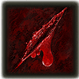

My Elden Ring Build
A new Elden Ring player but having watched many playthroughs I was attracted towards the builds I saw other youtubers played.
One of my favourite playthrough was by a youtuber called SeeReax who played a strength build and prefered only his greataxe until his one of the challenging fight against Starscourge Radahn
and upon defeating him fell in love with his boss weapon Starscourge Greatsword and used it for his entire playthrough of the base game and the DLC Shadow Of The Erdtree.
That was the best decision he had made because of the final boss in the DLC being Promised Consort Radahn and that video was the best ending to his playthrough.
That is when I realized that a player's build can make a great story and experience for the player, which made me very cautious of what build I create
and after dilly dallying around The Lands Between and finding some useful weapons I fell upon a non-original build that is kinda hated or looked down upon in disappointment, that being a Bleed Build which utilizes the Hemorrhage debuff mechanic.